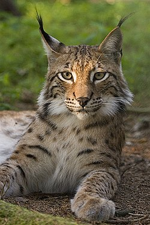
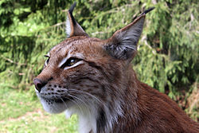

Ilves
Ilves (Lynx lynx) on keskikokoinen kissaeläin, joka on yksi laajimmalle levittäytyneistä kissoista. Sen asuinalue käsittää suuren osan Euraasia, ja sen kanta on vahvimmillaan Venäjällä, Fennoskandiassa, Baltiassa ja Karpaateilla. Lajin tunnusomaista elinympäristöä ovat pohjoiset havumetsät, mutta Keski-Aasiassa lajia tavataan jopa pensaistoissa ja ruohoaroilla.

